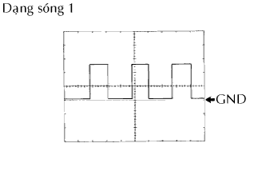
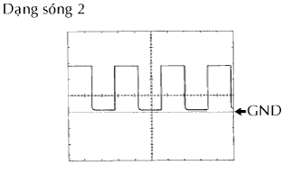

HỆ THỐNG ĐỒNG HỒ ĐO/ĐỒNG HỒ BÁO > CÁC CỰC CỦA ECU |
| KIỂM TRA CỤM ĐỒNG HỒ TÁP LÔ |
Ngắt các giắc nối C10 và C11 của đồng hồ táp lô.
Đo điện áp và điện trở của giắc nối phía dây điện.
| Cực số | Màu dây | Mô tả cực | Điều kiện | Điều kiện tiêu chuẩn |
| C10-1 - Mát thân xe | R - Mát thân xe | Ắc quy | Luôn luôn | 10 đến 14 V |
| C10-21 - Mát thân xe | B-O - Mát thân xe | Tín hiệu IG2 | Khoá điện ON | 10 đến 14 V |
| Khoá điện OFF | Dưới 1 V | |||
| C11-11 - Mát thân xe*1 | B-R - Mát thân xe | Cấp nguồn cho tính toán tiêu hao nhiên liệu | Khoá điện ON | 10 đến 14 V |
| Khoá điện OFF | Dưới 1 V | |||
| C10-22 - Mát thân xe | Y - Mát thân xe | Nối mát | Luôn luôn | Dưới 1 Ω |
| C10-19 - Mát thân xe*2 | W-B - Mát thân xe | |||
| C10-9 - Mát thân xe | W-G - Mát thân xe | Tín hiệu chiết áp | Núm chiết áp quay hết sang vị trí bên trái | 702 Ω |
| Núm chiết áp quay hết sang vị trí bên phải | Dưới 1 Ω |
Lắp các giắc nối C10 và C11 của đồng hồ.
Đo điện áp của các giắc nối.
| Cực số | Màu dây | Mô tả cực | Điều kiện | Điều kiện tiêu chuẩn |
| C10-2 - C10-3 | BR - BR-Y | Tín hiệu mức nhiên liệu | Khoá điện ON, Mức nhiên liệu F | Dưới 1 V |
| Khoá điện ON, Mức nhiên liệu E | 4 đến 7 V | |||
| C10-5 - Mát thân xe | P-L - Mát thân xe | Tín hiệu tốc độ xe (vào) | Khoá điện ON, quay chậm bánh xe | Tạo xung (xem dạng sóng 1) |
| C10-6 - Mát thân xe | V-R - Mát thân xe | Tín hiệu tốc độ xe (đầu ra) | Xe đang được dẫn động | Tạo xung (xem dạng sóng 1) |
| C10-7 - Mát thân xe | B-W - Mát thân xe | Tín hiệu nhiệt độ nước | Động cơ đang nổ máy | Tạo xung (xem dạng sóng 2) |
| C10-8 - C10-22 | G - Y | Tín hiệu công tắc điều khiển đèn | Công tắc điều khiển đèn OFF | Dưới 1 V |
| Công tắc điều khiển đèn TAIL hay HEAD | 10 đến 14 V | |||
| C10-10 - Mát thân xe*1 | G-Y - Mát thân xe | Tín hiệu công tắc cảnh báo mở khoá | Không có chìa khóa trong ổ khóa điện | Dưới 1 V |
| Khoá điện OFF, Cắm chìa khóa vào trong ổ khóa điện | 10 đến 14 V | |||
| C10-11 - Mát thân xe | R-Y - Mát thân xe | Tín hiệu cảnh báo đai an toàn của người lái | Khoá điện ON, Người lái chưa thắt đai an toàn. | Dưới 1 V |
| Khoá điện ON, Người lái đã thắt đai an toàn. | 10 đến 14 V | |||
| C10-15 - Mát thân xe | R-B - Mát thân xe | Tín hiệu ra cửa lái xe | Đóng cửa người lái | Dưới 1 V |
| Mở cửa phía người lái | 10 đến 14 V | |||
| C10-16 - Mát thân xe | R-B - Mát thân xe | Tín hiệu vào cửa lái xe | Đóng cửa người lái | Dưới 1 V |
| Mở cửa phía người lái | 10 đến 14 V | |||
| C10-17 - Mát thân xe | R-L - Mát thân xe | Tín hiệu cửa | Tất cả các cửa được đóng lại | Dưới 1 V |
| Tất cả các cửa mở | 10 đến 14 V | |||
| C10-20 - Mát thân xe*2 | B-Y - Mát thân xe | Tín hiệu đèn cảnh báo SRS | Khoá điện ON, Đèn cảnh báo SRS OFF | Dưới 1 V |
| Khoá điện ON, Đèn cảnh báo SRS ON | 10 đến 14 V | |||
| C10-24 - C10-22 | G-B - Y | Tín hiệu chỉ báo xinhan trái | Khoá điện ON, đèn chỉ báo xinhan trái OFF | Dưới 1 V |
| Khoá điện ON, đèn chỉ báo xinhan trái ON | 10 đến 14 V | |||
| C10-25 - C10-22 | G-Y - Y | Tín hiệu chỉ báo xinhan phải | Khoá điện ON, đèn chỉ báo xinhan phải OFF | Dưới 1 V |
| Khoá điện ON, đèn chỉ báo xinhan phải ON | 10 đến 14 V | |||
| C10-27 - Mát thân xe | R-Y - Mát thân xe | Tín hiệu chỉ báo HI BEAM | Đèn chỉ báo HI BEAM OFF | 10 đến 14 V |
| Đèn chỉ báo HI BEAM ON | Dưới 1 V | |||
| C10-30 - Mát thân xe*4 | G-B - Mát thân xe | Tín hiệu chỉ báo đèn sương mù trước | Công tắc điều khiển đèn TAIL hay HEAD Đèn sương mù trước ON | 10 đến 14 V |
| Công tắc điều khiển đèn TAIL hay HEAD Đèn sương mù trước OFF | Dưới 1 V | |||
| C10-35 - Mát thân xe | L-B - Mát thân xe | Tín hiệu cảnh báo áp suất dầu | Khoá điện ON, Đèn cảnh báo áp suất dầu OFF | 10 đến 14 V |
| Khoá điện ON, Đèn báo áp suất dầu động cơ ON | Dưới 1 V | |||
| C10-36 - Mát thân xe | LG - Mát thân xe | Tín hiệu cảnh báo phanh | Khoá điện ON, đèn báo phanh OFF | 10 đến 14 V |
| Khoá điện ON, đèn báo phanh ON | Dưới 1 V | |||
| C10-37 - Mát thân xe | GR - Mát thân xe | Tín hiệu báo nạp | Khoá điện ON, đèn báo nạp OFF | 10 đến 14 V |
| Khoá điện ON, đèn báo nạp ON | Dưới 1 V | |||
| C10-38 - Mát thân xe | R-G - Mát thân xe | Chỉ báo đèn ABS | Khoá điện ON, Mạch đèn báo ABS OFF | 10 đến 14 V |
| Khoá điện ON, Mạch đèn báo ABS | Dưới 1 V | |||
| C10-39 - Mát thân xe | R-B - Mát thân xe | Tín hiệu MIL | Khoá điện ON, MIL OFF | 10 đến 14 V |
| Khoá điện ON, MIL ON | Dưới 1 V | |||
| C11-10 - Mát thân xe*4 | L - Mát thân xe | Tín hiệu vòi phun | Động cơ đang nổ máy | Tạo xung |
|  |
Dùng máy đo hiện sóng, kiểm tra dạng sóng 1.
| Hạng mục | Nội dung |
| Cực số | C10-5 - Mát thân xe C10-6 - Mát thân xe |
| Đặt dụng cụ đo | 5 V/DIV., 10 msec./DIV. |
| Tình trạng xe | Lái xe với tốc độ xấp xỉ 20 km/h. |
|  |
Dùng máy đo hiện sóng, kiểm tra dạng sóng 2.
| Hạng mục | Nội dung |
| Cực số | C10-7 - Mát thân xe |
| Đặt dụng cụ đo | 5 V/DIV., 10 msec./DIV. |
| Tình trạng xe | Động cơ chạy không tải |
| KIỂM TRA CỤM ĐỒNG HỒ ĐO (HIỂN THỊ ĐA THÔNG TIN) |
Ngắt giắc A18 của đồng hồ.
Đo điện áp và điện trở của giắc nối phía dây điện.
| Ký hiệu (Số cực) | Màu dây | Mô tả cực | Điều kiện | Điều kiện tiêu chuẩn |
| +B (A18-14) - Mát thân xe | R - Mát thân xe | Cấp nguồn +B | Luôn luôn | 10 đến 14 V |
| IG (A18-12) - Mát thân xe | R-B - Mát thân xe | Cấp nguồn IG1 | Khoá điện ON | 10 đến 14 V |
| Khoá điện OFF | Dưới 1 V | |||
| ACC (A18-13) - Mát thân xe | G-R - Mát thân xe | Nguồn cấp ACC | Khoá điện ở ACC | 10 đến 14 V |
| Khoá điện OFF | Dưới 1 V | |||
| GND1 (A18-1) - Mát thân xe | LG - Mát thân xe | Nối mát | Luôn luôn | Dưới 1 Ω |
| SGND (A18-10) - Mát thân xe | BR - Mát thân xe |
Nối lại giắc nối A18 của đồng hồ táp lô.
Đo điện áp của giắc nối.
| Ký hiệu (Số cực) | Màu dây | Mô tả cực | Điều kiện | Điều kiện tiêu chuẩn |
| SG (A18-2) - TH+ (A18-3) | BR-Y - W-G | Tín hiệu cảm biến nhiệt độ bên ngoài A/C | Khoá điện ON, nhiệt độ môi trường 25°C (77°F) | 1.35 đến 1.75 V |
| Khoá điện ON, nhiệt độ môi trường 40°C (104°F) | 0.85 đến 2.34 V | |||
| TAIL (A18-6) - Mát thân xe | G - Mát thân xe | Tín hiệu chiếu sáng | Khoá điện ON, Công tắc điều khiển đèn OFF | Dưới 1 V |
| Khoá điện ON, Công tắc điều khiển đèn ON | 10 đến 14 V |
| Cực số | Nhìn từ phía dây điện | |
| C10 | 1 | Cầu chì DOME |
| 2 | Cụm hút nhiên liệu và bơm và đồng hồ đo | |
| 3 | ||
| 4 | ECM | |
| 5 | Cảm biến tốc độ xe | |
| 6 | 2 xung phát ra | |
| 7 | ECM | |
| 8 | Công tắc chế độ đèn pha | |
| 9 | Chiết áp điều khiển đèn | |
| 10 | Công tắc cảnh báo mở khoá | |
| 11 | Đai trong ghế trước trái*1 | |
| 12 | - | |
| 13 | ||
| 14 | ||
| 15 | Rơle tổ hợp | |
| 16 | Công tắc đèn cửa trước trái | |
| 17 | Công tắc đèn cửa | |
| 18 | - | |
| 19 | Mát thân xe*2 | |
| 20 | Cụm cảm biến túi khí trung tâm*3 | |
| 21 | Cầu chì MET | |
| 22 | Mát thân xe | |
| 23 | - | |
| 24 | Rơle bộ tạo nháy đèn xinhan | |
| 25 | ||
| 26 | - | |
| 27 | Công tắc chế độ đèn pha | |
| 28 | - | |
| 29 | ||
| 30 | Công tắc đèn sương mù trước*4 | |
| 31 | - | |
| 32 | ||
| 33 | ||
| 34 | ||
| 35 | Công tắc áp suất dầu | |
| 36 | Cụm công tắc phanh tay Công tắc cảnh báo mức dầu phanh ECU điều khiển trượt và bộ chấp hành | |
| 37 | Máy phát | |
| 38 | ECU điều khiển trượt và bộ chấp hành | |
| 39 | ECM (MIL) | |
| 40 | - | |
| C11 | 1 | - |
| 2 | ||
| 3 | ||
| 4 | ||
| 5 | ||
| 6 | ||
| 7 | ||
| 8 | ||
| 9 | ||
| 10 | Vòi phun nhiên liệu*5 | |
| 11 | - | |
| 12 | Đồng hồ (Màn hình đa thông tin)*5 | |
| 13 | ||
| 14 | - | |
| 15 | ||
| 16 | ||